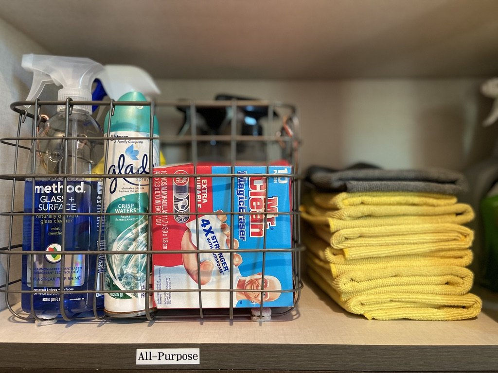
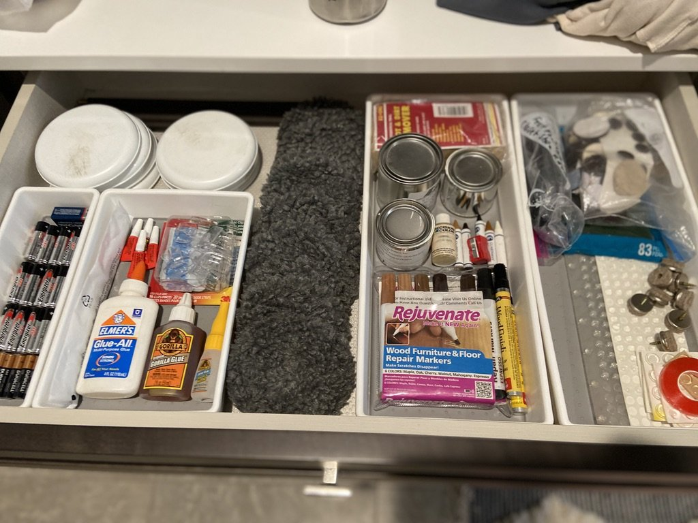

Tips for Organizing Your Laundry Space
Laundry is a chore that most of us can't avoid, but having an organized laundry space can make the task much more manageable and even enjoyable. A well-organized laundry room not only saves you time but also makes the entire process smoother. In this article, we'll explore some practical tips and ideas for organizing your laundry space efficiently, with a focus on creating a functional and aesthetically pleasing environment.
Declutter First: Before you can organize your laundry space effectively, it's essential to declutter. Take a critical look at your laundry room and get rid of any items you no longer need or use. This includes old detergents, worn-out clothing, and unused accessories. Decluttering will create more space for the items you actually need. Consider donating gently used clothing or items that are still in good condition to declutter responsibly.
Sort and Categorize: One of the key steps to an organized laundry space is sorting and categorizing your laundry items. Set up designated bins or baskets for different categories like whites, colors, delicates, and towels. Sorting as you go will save you time when it's laundry day. Consider color-coded bins or labels to make the sorting process even more straightforward.
Utilize Shelving: Installing shelves in your laundry room can significantly improve organization. Use open shelves for easy access to frequently used items like detergents, fabric softeners, and stain removers. For a cleaner look, invest in cabinets with doors to hide clutter. Adjustable shelves allow you to customize the space to fit your needs as they change over time.

Label Everything:
Labels are your best friends when it comes to laundry organization. Label containers, bins, and shelves to ensure that everyone in the household knows where everything belongs. This makes it easier for everyone to help with laundry and put things back in their proper place. Labeling also adds a neat and organized aesthetic to your laundry space.
Create a Folding Station:
Having a designated folding station can make a world of difference. Install a countertop or folding table with adequate space for folding clothes neatly. Underneath, you can add shelves or drawers to store folded laundry or extra linens. Consider adding a comfortable chair or stool to create a cozy spot for folding, making the task more enjoyable.
Hang Clothes Efficiently: Consider installing a wall-mounted drying rack or a retractable clothesline for hanging delicate or air-dry-only garments. This saves space and prevents clothes from cluttering your laundry room. If space allows, you can also set up a dedicated ironing station with an ironing board and iron storage.
Install a Hamper System: A well-designed hamper system can streamline the process of sorting dirty laundry. Look for hampers with multiple compartments, allowing you to separate whites, colors, and delicates right from the start. This eliminates the need to sort on laundry day and keeps the laundry room tidy. Hamper systems can be built into cabinets or standalone units.
Invest in Quality Laundry Baskets: Sturdy laundry baskets are essential for transporting clothes from the bedroom or bathroom to the laundry room. Opt for baskets with handles and ventilation to prevent odors from lingering. You can also choose stylish baskets that complement your laundry room's decor, adding a touch of elegance to the space.
Optimize Small Spaces: If you have a small laundry space, get creative with your organization. Use vertical space with wall-mounted racks or shelves, and consider stacking your washer and dryer to maximize floor space. Compact and stackable laundry appliances are available to make the most of tight spaces.

Keep Essentials Accessible: Ensure that essential laundry supplies are always within arm's reach. This includes detergent, stain removers, and fabric softeners. A caddy or organizer on top of your washer or dryer can keep these items easily accessible. You can also consider installing a built-in dispenser for detergent and other laundry additives.
Regular Maintenance: Organizing your laundry space is not a one-time task. Make it a habit to declutter and reorganize periodically. This ensures that your laundry room stays functional and clutter-free. Schedule regular maintenance, such as cleaning lint traps and checking for leaks or appliance issues, to keep your laundry room running smoothly.
An organized laundry space can make a world of difference in your daily life. By following these tips and ideas, you can create a laundry room that is efficient, tidy, and a joy to work in. Remember that the key to maintaining an organized laundry space is consistency. Keep up with your organization routine, and laundry day will become a breeze. Whether your laundry space is small or spacious, these tips can be tailored to fit your needs and preferences, ultimately transforming your laundry room into a functional and inviting space. With these strategies in place, you'll find that keeping up with your laundry becomes a much more manageable task, leaving you with more time to enjoy other aspects of life.